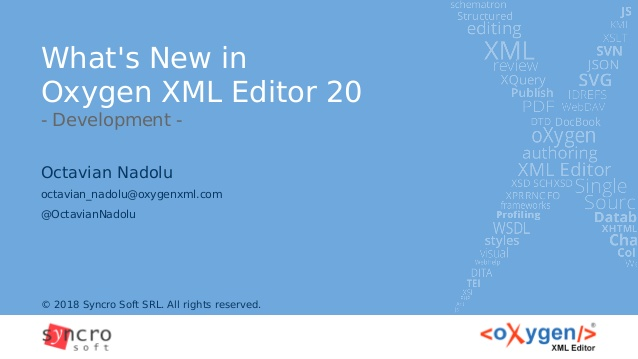

What is markup language
In computer text processing, a markup language is a system for annotating a document in a way that is syntactically distinguishable from the text.
The idea and terminology of markup languages evolved from the "marking up" of paper manuscripts (i.e., the revision instructions by editors), which is traditionally written with a red or blue pencil on authors' manuscripts.[2] In digital media, this "blue pencil instruction text" was replaced by tags, which indicate what the parts of the document are, rather than details of how they might be shown on some display. This lets authors avoid formatting every instance of the same kind of thing redundantly (and possibly inconsistently). It also avoids the specification of fonts and dimensions which may not apply to many users (such as those with different-size displays, impaired vision and screen-reading software). Early markup systems typically included typesetting instructions, as troff, TeX and LaTeX do, while Scribe and most modern markup systems name components, and later process those names to apply formatting or other processing, as in the case of XML. Some markup languages, such as the widely used HTML, have pre-defined presentation semantics—meaning that their specification prescribes generally how to present the structured data on particular media. Others, such as XML and its predecessor SGML, allow but do not impose such prescriptions—all of the while allowing users to define any custom document components as they wish. HyperText Markup Language (HTML), one of the document formats of the World Wide Web, is an application of SGML and XML. Other applications, such as DocBook, Open eBook, JATS and others, are heavily used in the communication of work between authors, editors, and printers.
This is a list of some markup languages:
- GenCode
- troff and nroff
- TeX
- Scribe, GML and SGML
- HTML
- XML
- XHTML
This is an example of a simple xml file:
<note>
<to>Tove</to>
<from>Jani</from>
<heading>Reminder</heading>
<body>Don't forget me this weekend!</body>
</note>